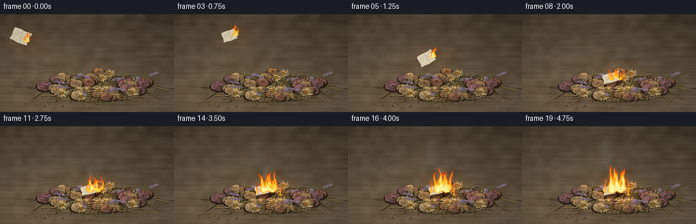
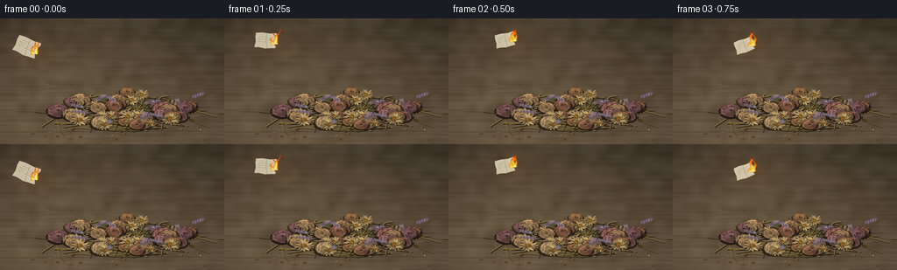

CODING AGENTS AS PIXEL WORLD MODELS
traex/GPT-6.1-Sol · material_0028
点击播放 · 原生 RGB 像素
逐轮保存的候选
回放视频、检查图与代码变化。
每份候选均可单独播放。实际图片检查记录在下方工具轨迹中。
候选 01播放与检查图
点击播放 · 原生 RGB 像素


展开代码变化
--- 上一保存版本
+++ 本次保存版本
@@ -0,0 +1,377 @@
+from pathlib import Path
+import math
+import json
+import numpy as np
+from PIL import Image, ImageDraw, ImageFilter
+import artifact_io
+
+ROOT = Path(__file__).resolve().parent
+SPEC = json.loads((ROOT/'task_spec.json').read_text())
+W, H = SPEC['width'], SPEC['height']
+S = 3
+WW, HH = W*S, H*S
+rng = np.random.default_rng(1926)
+Y, X = np.mgrid[0:HH,0:WW].astype(float)/S
+
+def col(c):
+ return tuple(int(np.clip(v,0,255)) for v in c)
+def xy(points):
+ return [(round(x*S),round(y*S)) for x,y in points]
+def line(d, pts, fill, width=0.35):
+ d.line(xy(pts), fill=col(fill), width=max(1,round(width*S)))
+def ellipse(d, bbox, fill):
+ d.ellipse(tuple(round(v*S) for v in bbox), fill=col(fill))
+def poly(d, pts, fill):
+ d.polygon(xy(pts), fill=col(fill))
+def noise_field(seed, size):
+ rr=np.random.default_rng(seed)
+ im=Image.fromarray(np.uint8(rr.uniform(0,255,(size[1],size[0]))))
+ return np.asarray(im.resize((WW,HH),Image.Resampling.BICUBIC)).astype(float)/255-.5
+
+# A subdued, worn wooden surface, with the distant part falling out of focus.
+fine=rng.normal(0,1,(HH,WW))
+cloud=noise_field(34,(24,15))
+wood=noise_field(35,(5,95))
+light=.65+.32*np.clip(Y/115,0,1)+.14*np.exp(-((X-64)/128)**2)
+base=np.zeros((HH,WW,3),float)
+for k,v in enumerate((100,85,65)):
+ base[:,:,k]=v*light + cloud*12+wood*11+fine*1.15
+# Perspective grain along the tabletop.
+base+=np.sin(Y[:,:,None]*7.1+np.sin(X[:,:,None]*.048)*.8)*1.1
+base=np.clip(base,0,255)
+bg=Image.fromarray(base.astype('uint8'))
+d=ImageDraw.Draw(bg)
+for i in range(80):
+ yy=rng.uniform(50,144)
+ xx=rng.uniform(-20,256)
+ ll=rng.uniform(8,60)
+ cc=np.array((88,71,51))*float(rng.uniform(.65,1))
+ line(d, [(xx,yy),(xx+ll*.4,yy+rng.uniform(-.4,.4)),(xx+ll,yy+rng.uniform(-.6,.6))],cc,.17)
+line(d,[(0,130),(77,129.6),(152,129),(256,129.4)],(50,40,31),.55)
+line(d,[(0,130.6),(112,130),(256,130.2)],(118,97,72),.35)
+bg=bg.filter(ImageFilter.GaussianBlur(.5*S))
+
+# Very soft, grounded shadow underneath the heap.
+shadow=Image.new('RGBA',(WW,HH))
+ds=ImageDraw.Draw(shadow)
+for i in range(4):
+ ds.ellipse((int((49-i*3)*S),int((96-i)*S),int((231+i*3)*S),int((131+i)*S)),fill=(12,9,7,22))
+shadow=shadow.filter(ImageFilter.GaussianBlur(5*S))
+bg=Image.alpha_composite(bg.convert('RGBA'),shadow).convert('RGB')
+d=ImageDraw.Draw(bg)
+# A disordered interwoven bed of thin, dry stems.
+for i in range(125):
+ x=rng.normal(141,36); y=rng.uniform(92,126)
+ angle=rng.uniform(-math.pi,math.pi)
+ length=rng.uniform(21,64)
+ x0=x-math.cos(angle)*length/2; x1=x+math.cos(angle)*length/2
+ y0=y-math.sin(angle)*length*.17; y1=y+math.sin(angle)*length*.17
+ c=np.array((117,97,51))*rng.uniform(.65,1.45)
+ pts=[(x0,y0),(x,y+rng.uniform(-3,3)),(x1,y1)]
+ line(d,[(px+.55,py+.8) for px,py in pts],(38,31,19),1.15)
+ line(d,pts,c,rng.uniform(.45,.9))
+ line(d,[(px,py-.22) for px,py in pts],c+19,.20)
+ if i%4==0:
+ q=rng.uniform(.25,.8); lx=x0+(x1-x0)*q; ly=y0+(y1-y0)*q
+ direction=rng.choice([-1,1]); a=angle+direction*.9
+ ln=rng.uniform(6,12)
+ pts2=[(lx,ly),(lx+math.cos(a)*ln*.45-1.7,ly+math.sin(a)*ln*.26-1.5),(lx+math.cos(a)*ln,ly+math.sin(a)*ln*.45),(lx+math.cos(a)*ln*.5+1.8,ly+math.sin(a)*ln*.3+1.5)]
+ poly(d,pts2,c*.7)
+ line(d,[pts2[0],pts2[2]],c*1.1,.25)
+
+# Geometry for gently curled and wrinkled dry petals.
+def dry_petal(d,cx,cy,angle,length,width,color,rr,flat=.64):
+ u=np.array([math.cos(angle),math.sin(angle)*flat]); v=np.array([-math.sin(angle),math.cos(angle)*flat])
+ center=np.array([cx,cy])
+ n=14
+ left=[]; right=[]
+ for j in range(n):
+ t=j/(n-1)
+ w=width*(math.sin(math.pi*t)**.55)*(.77+.20*rr.random())
+ mid=center+u*(length*t)+v*(.6*math.sin(t*5))
+ left.append(tuple(mid+v*w*.5)); right.append(tuple(mid-v*w*.5))
+ pts=left+right[::-1]
+ poly(d,[(x+.5,y+.75) for x,y in pts],np.array(color)*.38)
+ poly(d,pts,color)
+ middle=[tuple(center+u*(length*j/9)+v*(.6*math.sin(j/9*5))) for j in range(10)]
+ # Creased facets, uneven brown margins and a narrow raised vein.
+ poly(d,left+middle[::-1],np.array(color)*1.14)
+ line(d,right,np.array(color)*.72,.22)
+ line(d,middle,np.array(color)*.79,.22)
+ for frac in (.35,.54,.72):
+ root=center+u*length*frac
+ edge=center+u*length*(frac+.12)+v*width*.35*math.sin(frac*math.pi)
+ line(d,[tuple(root),tuple(edge)],np.array(color)*.85,.16)
+ if rr.random()<.7:
+ line(d,left[-4:]+right[-3:][::-1],np.array(color)*.63,.32)
+
+def rose(d,cx,cy,r,seed,color):
+ rr=np.random.default_rng(seed)
+ ellipse(d,(cx-r*1.08,cy-r*.52, cx+r*1.1,cy+r*.74),(38,27,20))
+ # Sepals sticking out beneath a desiccated flower.
+ for a in rr.uniform(0,6.28,6):
+ dry_petal(d,cx,cy,a,r*1.16,r*.20,(100,90,53),rr)
+ # Broad curled bowls, with irregular layered edges, rather than a flat flower icon.
+ for ring,number in [(1.,9),(.72,8),(.45,7),(.23,5)]:
+ phase=rr.uniform(0,6.28)
+ for j in range(number):
+ a=phase+j*math.tau/number+rr.normal(0,.13)
+ px=cx+math.cos(a)*r*ring*.50
+ py=cy+math.sin(a)*r*ring*.31-.8*(1-ring)
+ radial=np.array([math.cos(a),math.sin(a)*.67]); tang=np.array([-math.sin(a),math.cos(a)*.67])
+ rad=r*ring*.65
+ points=[]
+ for k in range(18):
+ b=math.tau*k/18
+ dist=1+.06*rr.normal()+.08*math.sin(b*5+j)
+ p=np.array([px,py])+radial*(math.cos(b)*rad*.70*dist)+tang*(math.sin(b)*rad*.80*dist)
+ points.append(tuple(p))
+ value=rr.uniform(.78,1.14)*(1+.14*math.cos(a+2))
+ c=np.array(color)*value
+ poly(d,points,c*.61)
+ # Inner folded surface, inset toward the center, casts a crescent seam.
+ top=[]
+ for k in range(13):
+ b=math.pi*.12+math.pi*1.75*k/12
+ p=np.array([px,py])+radial*(math.cos(b)*rad*.61)+tang*(math.sin(b)*rad*.72)
+ top.append(tuple(p))
+ poly(d,top,c)
+ line(d,top[:9],c*1.25,.4)
+ for l in range(4):
+ q=rr.uniform(-.6,.6)
+ start=np.array([px,py])-radial*rad*.32+tang*rad*q*.3
+ end=np.array([px,py])+radial*rad*.48+tang*rad*q
+ line(d,[tuple(start),tuple((start+end)/2+tang*.6),tuple(end)],c*rr.uniform(.78,.9),.18)
+ line(d,points[5:12],c*.57,.22)
+ ellipse(d,(cx-1.2,cy-1.5,cx+1,cy+.2),np.array(color)*.45)
+
+def daisy(d,cx,cy,r,seed):
+ rr=np.random.default_rng(seed)
+ n=rr.integers(12,18)
+ for j in range(n):
+ a=math.tau*j/n+rr.normal(0,.06)
+ color=np.array((190,160,108))*rr.uniform(.78,1.16)
+ dry_petal(d,cx,cy,a,r*rr.uniform(.78,1.1),r*rr.uniform(.18,.28),color,rr,.65)
+ ellipse(d,(cx-r*.27,cy-r*.19,cx+r*.27,cy+r*.19),(87,60,24))
+ for k in range(60):
+ a=rr.uniform(0,6.28); rad=math.sqrt(rr.random())*r*.26
+ xx=cx+math.cos(a)*rad; yy=cy+math.sin(a)*rad*.65
+ c=np.array((160,111,43))*rr.uniform(.6,1.25)
+ ellipse(d,(xx-.37,yy-.3,xx+.37,yy+.3),c)
+
+# Flower heads in a low mound. Muted plum, old ochre and pale straw signal dried blooms.
+flowers=[]
+for i in range(42):
+ # Elliptical random packing: organic overlaps, including flower faces and their sides.
+ a=rng.uniform(0,math.tau); rr=math.sqrt(rng.random())
+ x=143+rr*78*math.cos(a); y=103+rr*20*math.sin(a)
+ r=rng.uniform(6.3,12.8)
+ typ='rose' if rng.random()<.62 else 'daisy'
+ palette=[(158,111,72),(163,127,88),(129,90,88),(167,137,98),(145,99,75)]
+ flowers.append((y,x,r,typ,i,palette[int(rng.integers(0,len(palette)))]))
+# Distinct large flower heads that frame, rather than hide, the arriving paper.
+flowers.extend([(94,91,13,'rose',60,(167,130,90)),(103,187,14,'rose',61,(141,96,86)),(112,116,10,'daisy',62,(180,147,96)),(87,161,10,'daisy',63,(180,147,96))])
+for y,x,r,typ,i,palette in sorted(flowers):
+ if typ=='rose': rose(d,x,y,r,1100+i,palette)
+ else: daisy(d,x,y,r,1100+i)
+ if i%6==0:
+ # Little brittle stems visible between heads.
+ line(d,[(x,y+r*.5),(x+8,y+r*.9),(x+19,y+r*.77)],(132,112,65),.5)
+
+# Sprigs of dried lavender, tiny capsules and detached petal fragments around the heap.
+for i in range(11):
+ x=rng.uniform(63,221); y=rng.uniform(90,124)
+ a=rng.uniform(-2.9,-.25); length=rng.uniform(13,24)
+ end=(x+math.cos(a)*length,y+math.sin(a)*length*.45)
+ line(d,[(x,y),end],(109,100,63),.55)
+ for k in range(8):
+ q=.25+k*.09
+ xx=x+(end[0]-x)*q; yy=y+(end[1]-y)*q
+ c=np.array((115,99,113))*rng.uniform(.65,1.3)
+ for side in (-1,1):
+ ellipse(d,(xx+side*1.25-.9,yy-1.3,xx+side*1.25+.9,yy+1.1),c)
+ line(d,[(xx+side*1.25-.25,yy-1),(xx+side*1.25+.3,yy-.25)],c*1.28,.17)
+for i in range(45):
+ x=rng.uniform(39,235); y=rng.uniform(115,139)
+ if rng.random()<.30:
+ ellipse(d,(x,y,x+1.1,y+.6),(88,66,34))
+ else:
+ dry_petal(d,x,y,rng.uniform(0,6.28),rng.uniform(2,5),rng.uniform(.9,2),np.array((154,115,74))*rng.uniform(.7,1.25),rng)
+
+# Apply macro depth of field; foreground heads stay sharply resolved.
+sharp=np.asarray(bg).astype(float)
+blurred=np.asarray(bg.filter(ImageFilter.GaussianBlur(1.1*S))).astype(float)
+focus=np.exp(-((Y-105)/32)**4)
+scene=sharp*focus[:,:,None]+blurred*(1-focus[:,:,None])
+
+# Reusable paper surface: torn corner, lightly fibrous texture, a few faint ink strokes.
+def make_paper(t):
+ pw,ph=126,90
+ rr=np.random.default_rng(326)
+ yy,xx=np.mgrid[:ph,:pw]
+ tex=rr.normal(0,2,(ph,pw)) + 1.6*np.sin(xx*.27+yy*.15)
+ cc=np.zeros((ph,pw,4),np.uint8)
+ for k,v in enumerate((221,211,181)):
+ cc[:,:,k]=np.clip(v+tex-yy*.07,0,255)
+ mask=Image.new('L',(pw,ph)); dm=ImageDraw.Draw(mask)
+ dm.polygon([(3,6),(39,2),(82,5),(117,0),(125,26),(119,54),(123,82),(88,85),(59,89),(24,84),(0,86),(5,55),(1,28)],fill=255)
+ cc[:,:,3]=np.asarray(mask)
+ im=Image.fromarray(cc); dd=ImageDraw.Draw(im)
+ for j in range(4):
+ y=23+j*10
+ for k in range(7):
+ x=17+k*10
+ if (k+j)%5!=0:
+ dd.line([(x,y),(x+4,y-1),(x+6,y+1)],fill=(125,120,105,90),width=1)
+ dd.line([(64,6),(61,40),(69,86)],fill=(176,165,141,150),width=1)
+ dd.line([(65,6),(62,40),(70,85)],fill=(246,234,207,140),width=1)
+ # A curling, steadily receding charred edge, progressing only after landing.
+ burn=7+max(0,t-1.5)*13
+ edge=pw-burn+2*np.sin(yy*.19)+4*np.sin(yy*.071+1.2)
+ char=np.clip((xx-edge+8)/10,0,1)
+ data=np.asarray(im).copy()
+ target=np.stack([38+tex,31+tex,25+tex],axis=-1)
+ data[:,:,:3]=(data[:,:,:3]*(1-char[:,:,None])+target*char[:,:,None]).astype(np.uint8)
+ gone=xx>edge+7+np.sin(yy*.3)*2
+ data[gone,3]=0
+ ember=(xx>edge+3)&(xx<edge+5)&(data[:,:,3]>0)
+ data[ember,:3]=(230,102,21)
+ return Image.fromarray(data)
+
+# Fire is a continuous luminous density field: curved, tapered tongues of variable height.
+def fire_field(t, anchors):
+ F=np.zeros((HH,WW),float)
+ core=np.zeros_like(F)
+ for j,(cx,cy,height,width,strength) in enumerate(anchors):
+ phase=j*2.113
+ h=height*(.91+.12*math.sin(t*10.8+phase)+.08*math.sin(t*17.3+phase*2))
+ z=(cy-Y)/h
+ bend=(1.8*np.sin(z*7-t*8+phase)+2.8*np.sin(z*3.3+t*4+phase))*z
+ bend+=z*z*(2*math.sin(t*3+j))
+ cx2=cx+bend
+ ww=width*(.85*(1-np.clip(z,0,1))**.65+.06)
+ ww*=1+.17*np.sin(z*15-t*12+phase)
+ dist=(X-cx2)/ww
+ f=np.exp(-dist**2*1.9)*np.clip(z*12+1,0,1)*np.clip((1-z)*7,0,1)
+ f*=((z>-.09)&(z<1.0))
+ f*=strength*(.8+.13*np.sin(z*19+X*.55+t*10+phase))
+ F+=f
+ core+=f*np.clip(1-z*.9,0,1)
+ return F,core
+
+frames=[]
+for n in range(SPEC['frames']):
+ t=n/SPEC['fps']
+ landing=1.5
+ if t<landing:
+ u=t/landing
+ px=31+102*u
+ py=33-66*u+125*u*u
+ angle=-24+72*u+10*math.sin(u*5)
+ sc=1-.22*math.sin(u*math.pi)
+ else:
+ px=133; py=92+min(1,(t-landing)*2)
+ angle=17-4*min(1,t-landing)
+ sc=1
+ paper=make_paper(t).resize((round(29*S*sc),round(21*S*sc)),Image.Resampling.LANCZOS)
+ if t>=landing:
+ paper=paper.resize((29*S,round(15*S-(min(1,(t-landing)/3))*2*S)),Image.Resampling.LANCZOS)
+ paper=paper.rotate(angle,Image.Resampling.BICUBIC,expand=True)
+ # The burning leading corner follows the rotating piece in flight.
+ if t<landing:
+ a=math.radians(angle)
+ fx=px+11*sc*math.cos(a)+3*sc*math.sin(a)
+ fy=py-11*sc*math.sin(a)+3*sc*math.cos(a)
+ anchors=[(fx,fy,15,3.8,.95),(fx-3,fy+1,11,2.7,.85),(fx+2,fy,18,2.4,.65)]
+ else:
+ grow=np.clip((t-landing)/2.7,0,1)
+ fx=143; fy=94
+ anchors=[]
+ for j in range(8):
+ x=129+j*3.0
+ y=95+2*math.sin(j*1.5)
+ delay=max(0,(j-3)*.14)
+ g=np.clip((t-landing-delay)/2.8,0,1)
+ ht=(13+g*27)*( .75+.30*math.sin(j*1.9+1)**2)
+ anchors.append((x,y,ht,2.5+g*2.2,.64+g*.26))
+ if t>2.75:
+ anchors.extend([(122,98,13+(t-2.75)*8,2.8,.7),(156,101,10+(t-2.75)*8,3,.65)])
+ F,core=fire_field(t,anchors)
+ # Warm radiance subtly illuminates the nearby dry material, not the whole image.
+ rad=np.exp(-((X-fx)/28)**2-((Y-fy)/17)**2)
+ illumination=(.13+.13*max(0,t-landing))*rad
+ picture=scene.copy()
+ picture*=1+illumination[:,:,None]*np.array([.7,.30,-.10])
+ picture+=illumination[:,:,None]*np.array([23,8,0])
+ picture=np.clip(picture,0,255)
+ # A progressively blackened small patch under the paper.
+ if t>2.1:
+ black=np.clip((t-2.1)/4,0,.42)*np.exp(-((X-138)/15)**4-((Y-98)/7)**4)
+ picture*=1-black[:,:,None]
+ img=Image.fromarray(picture.astype(np.uint8)).convert('RGBA')
+ # Paper casts a much softer shadow while airborne.
+ sh=Image.new('RGBA',(WW,HH)); sd=ImageDraw.Draw(sh)
+ if t<landing:
+ alt=92-py
+ opacity=int(30+(1-alt/80)*35)
+ sd.ellipse((int((px-13)*S),int((100-3)*S),int((px+14)*S),int((100+3)*S)),fill=(16,11,5,opacity))
+ sh=sh.filter(ImageFilter.GaussianBlur((2+alt*.035)*S))
+ else:
+ sd.ellipse((int(117*S),int(89*S),int(150*S),int(103*S)),fill=(25,16,8,85))
+ sh=sh.filter(ImageFilter.GaussianBlur(1.1*S))
+ img=Image.alpha_composite(img,sh)
+ img.alpha_composite(paper,(round(px*S-paper.width/2),round(py*S-paper.height/2)))
+ # Airy, uneven smoke: advected translucent curls that rise, expand and disperse.
+ smoke=np.zeros((HH,WW),float)
+ for j in range(30):
+ age=(j/29)*2.0
+ time_emit=t-age
+ if time_emit<0: continue
+ if time_emit<landing:
+ u=time_emit/landing
+ ex=31+102*u+10
+ ey=33-66*u+125*u*u-8
+ weight=.013
+ else:
+ ex=139;ey=79
+ weight=.018+min(.035,(time_emit-landing)*.017)
+ sx=ex-12*age+4*math.sin(age*4+t*1.5)
+ sy=ey-26*age
+ ww=2+age*5; hh=4+age*7
+ smoke+=weight*np.exp(-((X-sx)/ww)**2-((Y-sy)/hh)**2)*math.exp(-age*.7)
+ smoke*=1+.3*noise_field(88,(46,28))
+ smoke=np.clip(smoke,0,.18)
+ arr=np.asarray(img.convert('RGB')).astype(float)
+ arr=arr*(1-smoke[:,:,None])+np.array([145,147,139])*smoke[:,:,None]
+ # Soft amber glow outside the much more detailed flame contours.
+ glow_im=Image.fromarray(np.uint8(np.clip(F,0,1)*255)).filter(ImageFilter.GaussianBlur(3*S))
+ glow=np.asarray(glow_im).astype(float)/255
+ arr+=glow[:,:,None]*np.array([32,11,1])
+ # Density to color, maintaining a white-yellow heart and transparent orange tips.
+ alpha=np.clip((F-.09)*2.2,0,.95)
+ heat=np.clip((core-.15)*1.45,0,1)
+ flame=np.empty_like(arr)
+ flame[:,:,0]=255
+ flame[:,:,1]=72+176*heat**.55
+ flame[:,:,2]=8+155*heat**2.3
+ arr=arr*(1-alpha[:,:,None])+flame*alpha[:,:,None]
+ img=Image.fromarray(np.clip(arr,0,255).astype('uint8'))
+ dd=ImageDraw.Draw(img)
+ # Rare sparks, travelling away from the material rather than hanging in place.
+ for j in range(7):
+ start=1.5+j*.36
+ age=t-start
+ if 0<age<1.0:
+ ex=137+math.sin(j*7)*8-age*(3+j)
+ ey=88-age*(23+j*3)
+ c=(255,int(183-age*76),42)
+ line(dd,[(ex,ey),(ex+.3,ey+1.1)],c,.35)
+ # Restrained lens vignette and one final supersampled reduction.
+ arr=np.asarray(img).astype(float)
+ vignette=1-.13*np.clip(((X-128)/164)**2+((Y-85)/118)**2,0,1)
+ arr*=vignette[:,:,None]
+ frame=Image.fromarray(np.uint8(np.clip(arr,0,255))).resize((W,H),Image.Resampling.LANCZOS)
+ frames.append(np.asarray(frame))
+frames=np.stack(frames).astype(np.uint8)
+artifact_io.save(frames,ROOT)
+print(f'Saved {len(frames)} RGB frames, {W}x{H}, {SPEC["fps"]} fps.')
可观测工具轨迹
实际执行的命令与返回图片。
命令 1exit 0
/bin/bash -lc 'ls -la && cat prompt.txt && cat GENERATION_RULES.md && cat task_spec.json'
命令 2exit 0
/bin/bash -lc 'cat artifact_io.py'
命令 3exit 0
/bin/bash -lc "python - <<'PY' import numpy,PIL print(numpy.__version__, PIL.__version__) PY"
命令 4exit 0
/bin/bash -lc "cat > generate.py <<'PY'
from pathlib import Path
import math
import json
import numpy as np
from PIL import Image, ImageDraw, ImageFilter
import artifact_io
ROOT = Path(__file__).resolve().parent
SPEC = json.loads((ROOT/'task_spec.json').read_text())
W, H = SPEC['width'], SPEC['height']
S = 3
WW, HH = W*S, H*S
rng = np.random.default_rng(1926)
Y, X = np.mgrid[0:HH,0:WW].astype(float)/S
def col(c):
return tuple(int(np.clip(v,0,255)) for v in c)
def xy(points):
return [(round(x*S),round(y*S)) for x,y in points]
def line(d, pts, fill, width=0.35):
d.line(xy(pts), fill=col(fill), width=max(1,round(width*S)))
def ellipse(d, bbox, fill):
d.ellipse(tuple(round(v*S) for v in bbox), fill=col(fill))
def poly(d, pts, fill):
d.polygon(xy(pts), fill=col(fill))
def noise_field(seed, size):
rr=np.random.default_rng(seed)
im=Image.fromarray(np.uint8(rr.uniform(0,255,(size[1],size[0]))))
return np.asarray(im.resize((WW,HH),Image.Resampling.BICUBIC)).astype(float)/255-.5
# A subdued, worn wooden surface, with the distant part falling out of focus.
fine=rng.normal(0,1,(HH,WW))
cloud=noise_field(34,(24,15))
wood=noise_field(35,(5,95))
light=.65+.32*np.clip(Y/115,0,1)+.14*np.exp(-((X-64)/128)**2)
base=np.zeros((HH,WW,3),float)
for k,v in enumerate((100,85,65)):
base[:,:,k]=v*light + cloud*12+wood*11+fine*1.15
# Perspective grain along the tabletop.
base+=np.sin(Y[:,:,None]*7.1+np.sin(X[:,:,None]*.048)*.8)*1.1
base=np.clip(base,0,255)
bg=Image.fromarray(base.astype('uint8'))
d=ImageDraw.Draw(bg)
for i in range(80):
yy=rng.uniform(50,144)
xx=rng.uniform(-20,256)
ll=rng.uniform(8,60)
cc=np.array((88,71,51))*float(rng.uniform(.65,1))
line(d, [(xx,yy),(xx+ll*.4,yy+rng.uniform(-.4,.4)),(xx+ll,yy+rng.uniform(-.6,.6))],cc,.17)
line(d,[(0,130),(77,129.6),(152,129),(256,129.4)],(50,40,31),.55)
line(d,[(0,130.6),(112,130),(256,130.2)],(118,97,72),.35)
bg=bg.filter(ImageFilter.GaussianBlur(.5*S))
# Very soft, grounded shadow underneath the heap.
shadow=Image.new('RGBA',(WW,HH))
ds=ImageDraw.Draw(shadow)
for i in range(4):
ds.ellipse((int((49-i*3)*S),int((96-i)*S),int((231+i*3)*S),int((131+i)*S)),fill=(12,9,7,22))
shadow=shadow.filter(ImageFilter.GaussianBlur(5*S))
bg=Image.alpha_composite(bg.convert('RGBA'),shadow).convert('RGB')
d=ImageDraw.Draw(bg)
# A disordered interwoven bed of thin, dry stems.
for i in range(125):
x=rng.normal(141,36); y=rng.uniform(92,126)
angle=rng.uniform(-math.pi,math.pi)
length=rng.uniform(21,64)
x0=x-math.cos(angle)*length/2; x1=x+math.cos(angle)*length/2
y0=y-math.sin(angle)*length*.17; y1=y+math.sin(angle)*length*.17
c=np.array((117,97,51))*rng.uniform(.65,1.45)
pts=[(x0,y0),(x,y+rng.uniform(-3,3)),(x1,y1)]
line(d,[(px+.55,py+.8) for px,py in pts],(38,31,19),1.15)
line(d,pts,c,rng.uniform(.45,.9))
line(d,[(px,py-.22) for px,py in pts],c+19,.20)
if i%4==0:
q=rng.uniform(.25,.8); lx=x0+(x1-x0)*q; ly=y0+(y1-y0)*q
direction=rng.choice([-1,1]); a=angle+direction*.9
ln=rng.uniform(6,12)
pts2=[(lx,ly),(lx+math.cos(a)*ln*.45-1.7,ly+math.sin(a)*ln*.26-1.5),(lx+math.cos(a)*ln,ly+math.sin(a)*ln*.45),(lx+math.cos(a)*ln*.5+1.8,ly+math.sin(a)*ln*.3+1.5)]
poly(d,pts2,c*.7)
line(d,[pts2[0],pts2[2]],c*1.1,.25)
# Geometry for gently curled and wrinkled dry petals.
def dry_petal(d,cx,cy,angle,length,width,color,rr,flat=.64):
u=np.array([math.cos(angle),math.sin(angle)*flat]); v=np.array([-math.sin(angle),math.cos(angle)*flat])
center=np.array([cx,cy])
n=14
left=[]; right=[]
for j in range(n):
t=j/(n-1)
w=width*(math.sin(math.pi*t)**.55)*(.77+.20*rr.random())
mid=center+u*(length*t)+v*(.6*math.sin(t*5))
left.append(tuple(mid+v*w*.5)); right.append(tuple(mid-v*w*.5))
pts=left+right[::-1]
poly(d,[(x+.5,y+.75) for x,y in pts],np.array(color)*.38)
poly(d,pts,color)
middle=[tuple(center+u*(length*j/9)+v*(.6*math.sin(j/9*5))) for j in range(10)]
# Creased facets, uneven brown margins and a narrow raised vein.
poly(d,left+middle[::-1],np.array(color)*1.14)
line(d,right,np.array(color)*.72,.22)
line(d,middle,np.array(color)*.79,.22)
for frac in (.35,.54,.72):
root=center+u*length*frac
edge=center+u*length*(frac+.12)+v*width*.35*math.sin(frac*math.pi)
line(d,[tuple(root),tuple(edge)],np.array(color)*.85,.16)
if rr.random()<.7:
line(d,left[-4:]+right[-3:][::-1],np.array(color)*.63,.32)
def rose(d,cx,cy,r,seed,color):
rr=np.random.default_rng(seed)
ellipse(d,(cx-r*1.08,cy-r*.52, cx+r*1.1,cy+r*.74),(38,27,20))
# Sepals sticking out beneath a desiccated flower.
for a in rr.uniform(0,6.28,6):
dry_petal(d,cx,cy,a,r*1.16,r*.20,(100,90,53),rr)
# Broad curled bowls, with irregular layered edges, rather than a flat flower icon.
for ring,number in [(1.,9),(.72,8),(.45,7),(.23,5)]:
phase=rr.uniform(0,6.28)
for j in range(number):
a=phase+j*math.tau/number+rr.normal(0,.13)
px=cx+math.cos(a)*r*ring*.50
py=cy+math.sin(a)*r*ring*.31-.8*(1-ring)
radial=np.array([math.cos(a),math.sin(a)*.67]); tang=np.array([-math.sin(a),math.cos(a)*.67])
rad=r*ring*.65
points=[]
for k in range(18):
b=math.tau*k/18
dist=1+.06*rr.normal()+.08*math.sin(b*5+j)
p=np.array([px,py])+radial*(math.cos(b)*rad*.70*dist)+tang*(math.sin(b)*rad*.80*dist)
points.append(tuple(p))
value=rr.uniform(.78,1.14)*(1+.14*math.cos(a+2))
c=np.array(color)*value
poly(d,points,c*.61)
# Inner folded surface, inset toward the center, casts a crescent seam.
top=[]
for k in range(13):
b=math.pi*.12+math.pi*1.75*k/12
p=np.array([px,py])+radial*(math.cos(b)*rad*.61)+tang*(math.sin(b)*rad*.72)
top.append(tuple(p))
poly(d,top,c)
line(d,top[:9],c*1.25,.4)
for l in range(4):
q=rr.uniform(-.6,.6)
start=np.array([px,py])-radial*rad*.32+tang*rad*q*.3
end=np.array([px,py])+radial*rad*.48+tang*rad*q
line(d,[tuple(start),tuple((start+end)/2+tang*.6),tuple(end)],c*rr.uniform(.78,.9),.18)
line(d,points[5:12],c*.57,.22)
ellipse(d,(cx-1.2,cy-1.5,cx+1,cy+.2),np.array(color)*.45)
def daisy(d,cx,cy,r,seed):
rr=np.random.default_rng(seed)
n=rr.integers(12,18)
for j in range(n):
a=math.tau*j/n+rr.normal(0,.06)
color=np.array((190,160,108))*rr.uniform(.78,1.16)
dry_petal(d,cx,cy,a,r*rr.uniform(.78,1.1),r*rr.uniform(.18,.28),color,rr,.65)
ellipse(d,(cx-r*.27,cy-r*.19,cx+r*.27,cy+r*.19),(87,60,24))
for k in range(60):
a=rr.uniform(0,6.28); rad=math.sqrt(rr.random())*r*.26
xx=cx+math.cos(a)*rad; yy=cy+math.sin(a)*rad*.65
c=np.array((160,111,43))*rr.uniform(.6,1.25)
ellipse(d,(xx-.37,yy-.3,xx+.37,yy+.3),c)
# Flower heads in a low mound. Muted plum, old ochre and pale straw signal dried blooms.
flowers=[]
for i in range(42):
# Elliptical random packing: organic overlaps, including flower faces and their sides.
a=rng.uniform(0,math.tau); rr=math.sqrt(rng.random())
x=143+rr*78*math.cos(a); y=103+rr*20*math.sin(a)
r=rng.uniform(6.3,12.8)
typ='rose' if rng.random()<.62 else 'daisy'
palette=[(158,111,72),(163,127,88),(129,90,88),(167,137,98),(145,99,75)]
flowers.append((y,x,r,typ,i,palette[int(rng.integers(0,len(palette)))]))
# Distinct large flower heads that frame, rather than hide, the arriving paper.
flowers.extend([(94,91,13,'rose',60,(167,130,90)),(103,187,14,'rose',61,(141,96,86)),(112,116,10,'daisy',62,(180,147,96)),(87,161,10,'daisy',63,(180,147,96))])
for y,x,r,typ,i,palette in sorted(flowers):
if typ=='rose': rose(d,x,y,r,1100+i,palette)
else: daisy(d,x,y,r,1100+i)
if i%6==0:
# Little brittle stems visible between heads.
line(d,[(x,y+r*.5),(x+8,y+r*.9),(x+19,y+r*.77)],(132,112,65),.5)
# Sprigs of dried lavender, tiny capsules and detached petal fragments around the heap.
for i in range(11):
x=rng.uniform(63,221); y=rng.uniform(90,124)
a=rng.uniform(-2.9,-.25); length=rng.uniform(13,24)
end=(x+math.cos(a)*length,y+math.sin(a)*length*.45)
line(d,[(x,y),end],(109,100,63),.55)
for k in range(8):
q=.25+k*.09
xx=x+(end[0]-x)*q; yy=y+(end[1]-y)*q
c=np.array((115,99,113))*rng.uniform(.65,1.3)
for side in (-1,1):
ellipse(d,(xx+side*1.25-.9,yy-1.3,xx+side*1.25+.9,yy+1.1),c)
line(d,[(xx+side*1.25-.25,yy-1),(xx+side*1.25+.3,yy-.25)],c*1.28,.17)
for i in range(45):
x=rng.uniform(39,235); y=rng.uniform(115,139)
if rng.random()<.30:
ellipse(d,(x,y,x+1.1,y+.6),(88,66,34))
else:
dry_petal(d,x,y,rng.uniform(0,6.28),rng.uniform(2,5),rng.uniform(.9,2),np.array((154,115,74))*rng.uniform(.7,1.25),rng)
# Apply macro depth of field; foreground heads stay sharply resolved.
sharp=np.asarray(bg).astype(float)
blurred=np.asarray(bg.filter(ImageFilter.GaussianBlur(1.1*S))).astype(float)
focus=np.exp(-((Y-105)/32)**4)
scene=sharp*focus[:,:,None]+blurred*(1-focus[:,:,None])
# Reusable paper surface: torn corner, lightly fibrous texture, a few faint ink strokes.
def make_paper(t):
pw,ph=126,90
rr=np.random.default_rng(326)
yy,xx=np.mgrid[:ph,:pw]
tex=rr.normal(0,2,(ph,pw)) + 1.6*np.sin(xx*.27+yy*.15)
cc=np.zeros((ph,pw,4),np.uint8)
for k,v in enumerate((221,211,181)):
cc[:,:,k]=np.clip(v+tex-yy*.07,0,255)
mask=Image.new('L',(pw,ph)); dm=ImageDraw.Draw(mask)
dm.polygon([(3,6),(39,2),(82,5),(117,0),(125,26),(119,54),(123,82),(88,85),(59,89),(24,84),(0,86),(5,55),(1,28)],fill=255)
cc[:,:,3]=np.asarray(mask)
im=Image.fromarray(cc); dd=ImageDraw.Draw(im)
for j in range(4):
y=23+j*10
for k in range(7):
x=17+k*10
if (k+j)%5"'!=0:
dd.line([(x,y),(x+4,y-1),(x+6,y+1)],fill=(125,120,105,90),width=1)
dd.line([(64,6),(61,40),(69,86)],fill=(176,165,141,150),width=1)
dd.line([(65,6),(62,40),(70,85)],fill=(246,234,207,140),width=1)
# A curling, steadily receding charred edge, progressing only after landing.
burn=7+max(0,t-1.5)*13
edge=pw-burn+2*np.sin(yy*.19)+4*np.sin(yy*.071+1.2)
char=np.clip((xx-edge+8)/10,0,1)
data=np.asarray(im).copy()
target=np.stack([38+tex,31+tex,25+tex],axis=-1)
data[:,:,:3]=(data[:,:,:3]*(1-char[:,:,None])+target*char[:,:,None]).astype(np.uint8)
gone=xx>edge+7+np.sin(yy*.3)*2
data[gone,3]=0
ember=(xx>edge+3)&(xx<edge+5)&(data[:,:,3]>0)
data[ember,:3]=(230,102,21)
return Image.fromarray(data)
# Fire is a continuous luminous density field: curved, tapered tongues of variable height.
def fire_field(t, anchors):
F=np.zeros((HH,WW),float)
core=np.zeros_like(F)
for j,(cx,cy,height,width,strength) in enumerate(anchors):
phase=j*2.113
h=height*(.91+.12*math.sin(t*10.8+phase)+.08*math.sin(t*17.3+phase*2))
z=(cy-Y)/h
bend=(1.8*np.sin(z*7-t*8+phase)+2.8*np.sin(z*3.3+t*4+phase))*z
bend+=z*z*(2*math.sin(t*3+j))
cx2=cx+bend
ww=width*(.85*(1-np.clip(z,0,1))**.65+.06)
ww*=1+.17*np.sin(z*15-t*12+phase)
dist=(X-cx2)/ww
f=np.exp(-dist**2*1.9)*np.clip(z*12+1,0,1)*np.clip((1-z)*7,0,1)
f*=((z>-.09)&(z<1.0))
f*=strength*(.8+.13*np.sin(z*19+X*.55+t*10+phase))
F+=f
core+=f*np.clip(1-z*.9,0,1)
return F,core
frames=[]
for n in range(SPEC['"'frames']):
t=n/SPEC['fps']
landing=1.5
if t<landing:
u=t/landing
px=31+102*u
py=33-66*u+125*u*u
angle=-24+72*u+10*math.sin(u*5)
sc=1-.22*math.sin(u*math.pi)
else:
px=133; py=92+min(1,(t-landing)*2)
angle=17-4*min(1,t-landing)
sc=1
paper=make_paper(t).resize((round(29*S*sc),round(21*S*sc)),Image.Resampling.LANCZOS)
if t>=landing:
paper=paper.resize((29*S,round(15*S-(min(1,(t-landing)/3))*2*S)),Image.Resampling.LANCZOS)
paper=paper.rotate(angle,Image.Resampling.BICUBIC,expand=True)
# The burning leading corner follows the rotating piece in flight.
if t<landing:
a=math.radians(angle)
fx=px+11*sc*math.cos(a)+3*sc*math.sin(a)
fy=py-11*sc*math.sin(a)+3*sc*math.cos(a)
anchors=[(fx,fy,15,3.8,.95),(fx-3,fy+1,11,2.7,.85),(fx+2,fy,18,2.4,.65)]
else:
grow=np.clip((t-landing)/2.7,0,1)
fx=143; fy=94
anchors=[]
for j in range(8):
x=129+j*3.0
y=95+2*math.sin(j*1.5)
delay=max(0,(j-3)*.14)
g=np.clip((t-landing-delay)/2.8,0,1)
ht=(13+g*27)*( .75+.30*math.sin(j*1.9+1)**2)
anchors.append((x,y,ht,2.5+g*2.2,.64+g*.26))
if t>2.75:
anchors.extend([(122,98,13+(t-2.75)*8,2.8,.7),(156,101,10+(t-2.75)*8,3,.65)])
F,core=fire_field(t,anchors)
# Warm radiance subtly illuminates the nearby dry material, not the whole image.
rad=np.exp(-((X-fx)/28)**2-((Y-fy)/17)**2)
illumination=(.13+.13*max(0,t-landing))*rad
picture=scene.copy()
picture*=1+illumination[:,:,None]*np.array([.7,.30,-.10])
picture+=illumination[:,:,None]*np.array([23,8,0])
picture=np.clip(picture,0,255)
# A progressively blackened small patch under the paper.
if t>2.1:
black=np.clip((t-2.1)/4,0,.42)*np.exp(-((X-138)/15)**4-((Y-98)/7)**4)
picture*=1-black[:,:,None]
img=Image.fromarray(picture.astype(np.uint8)).convert('RGBA')
# Paper casts a much softer shadow while airborne.
sh=Image.new('RGBA',(WW,HH)); sd=ImageDraw.Draw(sh)
if t<landing:
alt=92-py
opacity=int(30+(1-alt/80)*35)
sd.ellipse((int((px-13)*S),int((100-3)*S),int((px+14)*S),int((100+3)*S)),fill=(16,11,5,opacity))
sh=sh.filter(ImageFilter.GaussianBlur((2+alt*.035)*S))
else:
sd.ellipse((int(117*S),int(89*S),int(150*S),int(103*S)),fill=(25,16,8,85))
sh=sh.filter(ImageFilter.GaussianBlur(1.1*S))
img=Image.alpha_composite(img,sh)
img.alpha_composite(paper,(round(px*S-paper.width/2),round(py*S-paper.height/2)))
# Airy, uneven smoke: advected translucent curls that rise, expand and disperse.
smoke=np.zeros((HH,WW),float)
for j in range(30):
age=(j/29)*2.0
time_emit=t-age
if time_emit<0: continue
if time_emit<landing:
u=time_emit/landing
ex=31+102*u+10
ey=33-66*u+125*u*u-8
weight=.013
else:
ex=139;ey=79
weight=.018+min(.035,(time_emit-landing)*.017)
sx=ex-12*age+4*math.sin(age*4+t*1.5)
sy=ey-26*age
ww=2+age*5; hh=4+age*7
smoke+=weight*np.exp(-((X-sx)/ww)**2-((Y-sy)/hh)**2)*math.exp(-age*.7)
smoke*=1+.3*noise_field(88,(46,28))
smoke=np.clip(smoke,0,.18)
arr=np.asarray(img.convert('RGB')).astype(float)
arr=arr*(1-smoke[:,:,None])+np.array([145,147,139])*smoke[:,:,None]
# Soft amber glow outside the much more detailed flame contours.
glow_im=Image.fromarray(np.uint8(np.clip(F,0,1)*255)).filter(ImageFilter.GaussianBlur(3*S))
glow=np.asarray(glow_im).astype(float)/255
arr+=glow[:,:,None]*np.array([32,11,1])
# Density to color, maintaining a white-yellow heart and transparent orange tips.
alpha=np.clip((F-.09)*2.2,0,.95)
heat=np.clip((core-.15)*1.45,0,1)
flame=np.empty_like(arr)
flame[:,:,0]=255
flame[:,:,1]=72+176*heat**.55
flame[:,:,2]=8+155*heat**2.3
arr=arr*(1-alpha[:,:,None])+flame*alpha[:,:,None]
img=Image.fromarray(np.clip(arr,0,255).astype('uint8'))
dd=ImageDraw.Draw(img)
# Rare sparks, travelling away from the material rather than hanging in place.
for j in range(7):
start=1.5+j*.36
age=t-start
if 0<age<1.0:
ex=137+math.sin(j*7)*8-age*(3+j)
ey=88-age*(23+j*3)
c=(255,int(183-age*76),42)
line(dd,[(ex,ey),(ex+.3,ey+1.1)],c,.35)
# Restrained lens vignette and one final supersampled reduction.
arr=np.asarray(img).astype(float)
vignette=1-.13*np.clip(((X-128)/164)**2+((Y-85)/118)**2,0,1)
arr*=vignette[:,:,None]
frame=Image.fromarray(np.uint8(np.clip(arr,0,255))).resize((W,H),Image.Resampling.LANCZOS)
frames.append(np.asarray(frame))
frames=np.stack(frames).astype(np.uint8)
artifact_io.save(frames,ROOT)
print(f'Saved {len(frames)} RGB frames, {W}x{H}, {SPEC[\"fps\"]} fps.')
PY
python generate.py"命令 5exit 0
/bin/bash -lc "python - <<'PY'
from pathlib import Path
import numpy as np
from PIL import Image
p=Path('.')
a=np.load(p/'pixels.npz')['pixels']
assert a.shape==(144,256,20)
assert len(list((p/'frames').glob('*.png')))==20
assert all(Image.open(p/'frames'/f'{i:02d}.png').mode=='RGB' for i in range(20))
for f in ('generate.py','pixels.npz','index.html','inspection.png','transition_check.png'):
print(f,(p/f).stat().st_size)
print('Validated dimensions, frame count, and RGB format.')
PY"保存候选 1 份；完成命令 5 次；可验证图片返回 0 张。原始 API 响应与完整日志保留在本地。